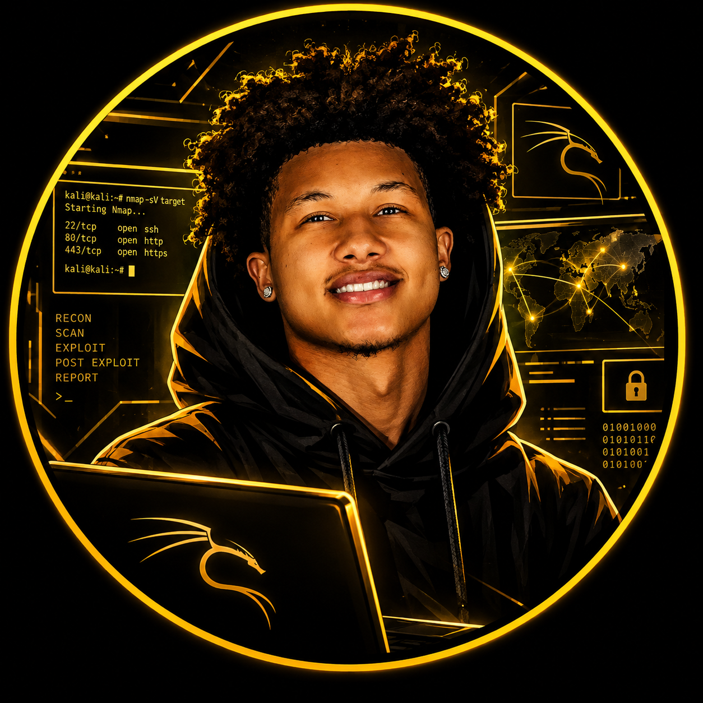
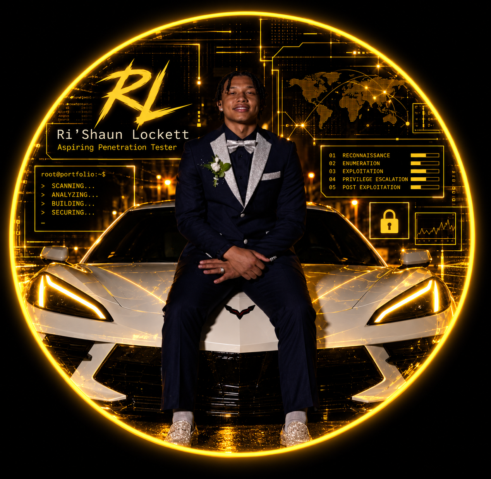

Web Portfolio
Designed and developed my personal cybersecurity portfolio using HTML and CSS. This project focuses on responsive design, navigation, and creating a professional website.
HTML | CSS | Web Design
View Project →
Ri'Shaun Lockett
Aspiring Penetration Tester
Information Technology student with a concentration in Cybersecurity. I have a passion for ethical hacking, penetration testing, and network security. I am dedicated to learning and growing in the field of cybersecurity, and I am eager to apply my skills and knowledge to real-world scenarios. I'm building skills today and always developing new ones to become a well-rounded cybersecurity professional. I am committed to staying up-to-date with the latest trends and technologies in the field, and I am always looking for new challenges and opportunities to learn and grow.

VIEW MY RESUME →I am a current Information Technology student with a concentration in Cybersecurity at Middle Georgia State University. I am currently in my Second Year of college with a few IT classes under my belt. A few hobbies of mine is, I love testing OSINT github projects and learning new things in kali linux. I also love gaming from time to time and I am a huge fan of anime. I plan on getting my CompTIA certifcations from Basic IT all the way to Security+. Lastly, I am 19 years young and I am a very ambitious person. I am always looking for new opportunities to learn and grow in the field of cybersecurity. I am also a very hard worker and I am always willing to put in the extra effort to achieve my goals.
Information Technology Student (Cybersecurity Concentration)
Penetration Tester
Python | Virtual Machines | html and css | Labs | Cisco

Designed and developed my personal cybersecurity portfolio using HTML and CSS. This project focuses on responsive design, navigation, and creating a professional website.
HTML | CSS | Web Design
View Project →Developed Python programs using functions, loops, lists, and object-oriented programming.
View Projects →Built network topologies and practiced connecting devices using Cisco Packet Tracer.
Learn More →